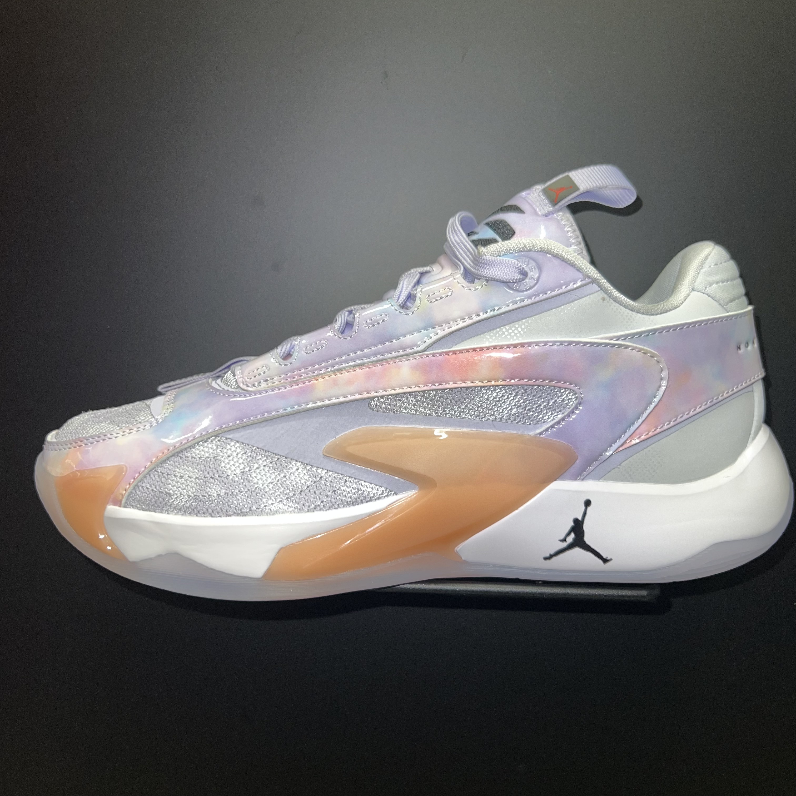

jordan

Luka 2's
- Colorway: Football Grey / Oxygen Purple / Artic Orange
- Price: $130.00
- Coming off Luka first year as a signature shoe athlete.
Luke and the Jordan brand presents the Luka 2's after the success of the previous Luka 1's.
Introducing the Luka 2's Jordan brand provided the sneaker retail with an exotic colorway for the first shoe.
I could see this shoe doing very well on the market.
The look is totally different compared to the Luka 1's.
And to mention with this model the Jordan brand focused on providing more stability for the athletes.